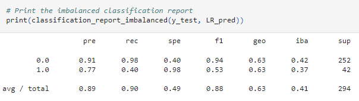
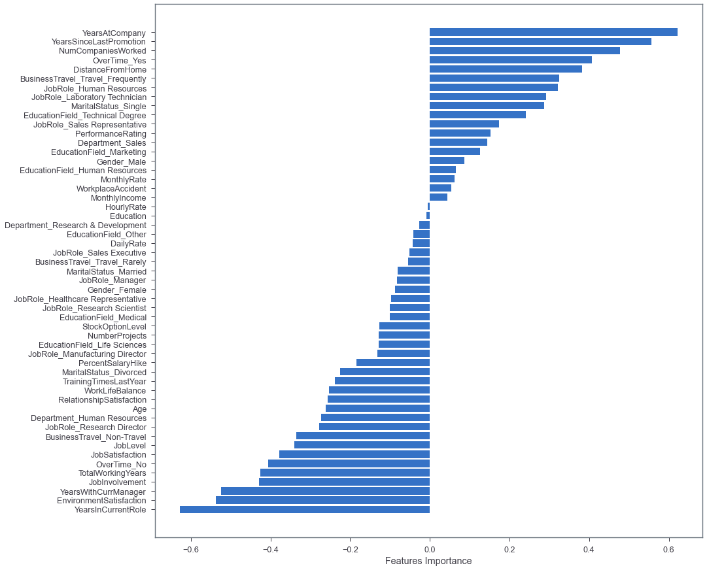

Machine Learning:
Which model performed the best?
Logistical Regression
The accuracy score for the Random Forest Classifier model was 89.8%, as shown below.


Random Forest
The accuracy score for the Random Forest Classifier model was 86.7%, as shown below.

Support Vector Machine
The accuracy score for the Support Vector Machine model was 89.1%, as shown below.
XGBoost
The accuracy score for the XGBoost model was 88.3%, as shown below.
Naive Bayes
The accuracy score for the Naive Bayes model was 62.5%, as shown below.
Hyperparameter Tuning
We used hyperparameter tuning on all five models. Below we can see the accuracy score of all the models. The Logistic Regression model performed the best out of all models.